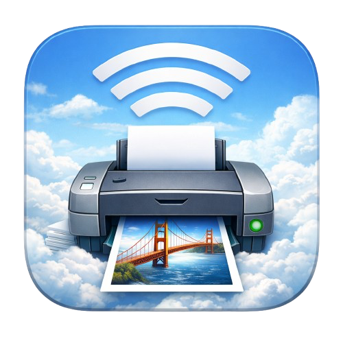
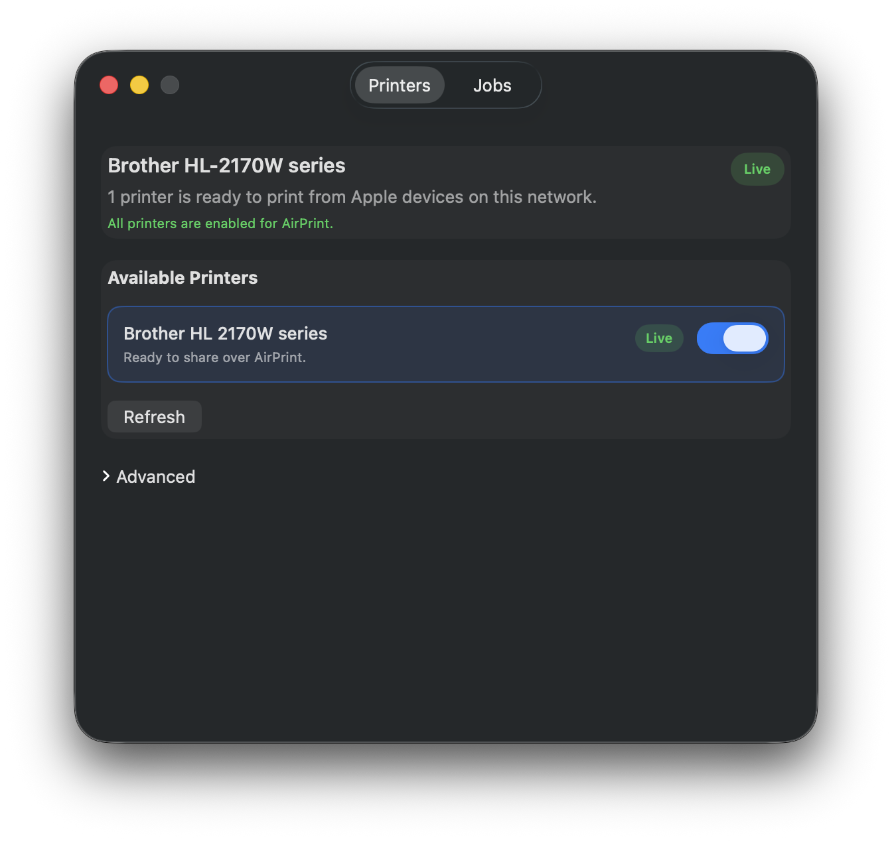
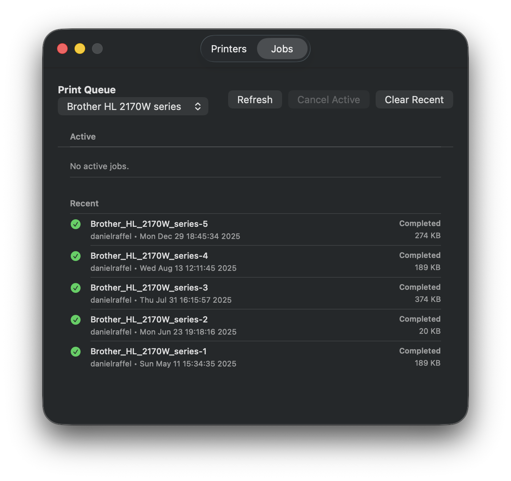
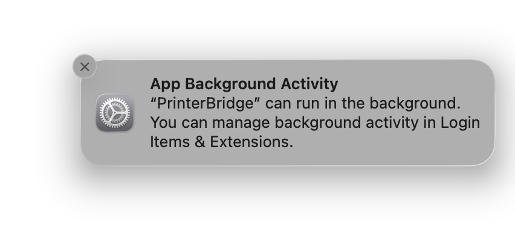

Enable AirPrint on older printers so you can print from iPhone, iPad, and Mac.
A simple macOS utility for enabling AirPrint, checking print jobs, and keeping legacy printers useful without sending anything to a cloud service.



Printer Bridge is a universal macOS app for Intel and Apple Silicon Macs that turns existing macOS printer support into usable AirPrint sharing for modern Apple devices.
If your Mac can already print to the printer, Printer Bridge will usually make it available to iPhone, iPad, and other Apple devices.
Enable one or more printers and check recent print jobs from the same app.
Rename a printer if you want a cleaner AirPrint name, and enable or disable sharing whenever you need.
Choose the app appearance you want, or leave it on System to follow macOS automatically.
Printer Bridge uses its own local proxy service, so you can print from AirPrint devices without turning on legacy macOS printer sharing.
No analytics, no tracking, no ad network, and no data resale. Printing stays on your Mac and local network.
The short version: if the printer already works from this Mac, Printer Bridge is the missing AirPrint layer.
Printer Bridge runs a local background service on your Mac, advertises an AirPrint-capable printer on your network, and forwards those jobs into the printer queue macOS already uses. If your Mac can already print to the printer, Printer Bridge usually handles the rest.
Printer Bridge supports Apple Silicon and Intel Macs. It has been tested on macOS 15 and later, including macOS 26.
Yes. Your Mac is the bridge, so it needs to stay awake and connected to your local network for AirPrint discovery and printing to keep working.
Not normally. Current builds use Printer Bridge’s own proxy service rather than depending on the older macOS Printer Sharing path, but the printer still needs to print successfully from this Mac first.
Bug reports belong on GitHub using the bug report template.
Feature ideas belong on GitHub using the feature request template.
We believe hardware deserves to be liberated when vendors no longer support it or keep it up to date. We understand why they stop investing in older devices, but ideally they would open-source that work. When they do not, we are motivated to help fill the gap with modern capabilities so more devices stay out of the e-waste stream.
{kind=link}